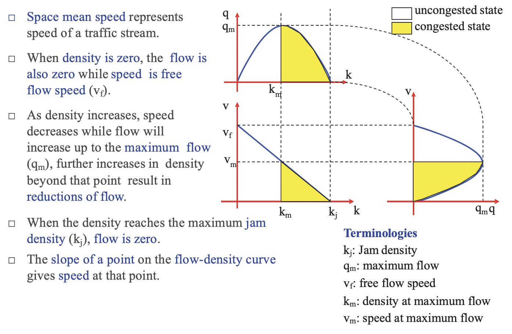
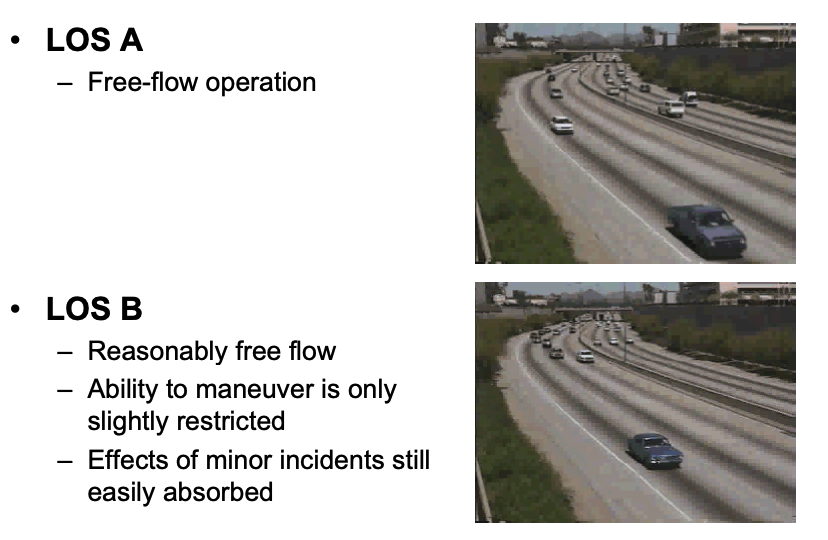

Civil 771: PLANNING AND MANAGING TRANSPORT
Chapter 3: TRAFFIC FLOW, CAPACITY AND LEVELS OF SERVICE
Dr Minh Kieu
Lecturer
Department of Civil and Environment Engineering, University of Auckland
These slides:
http://bit.ly/2020-civil771-3

Learning outcomes:
1. Basic concepts in traffic engineering
Traffic flow
Traffic flow theory
Capacity
Level of service
2. Types of traffic models
3. Introduction to the HCM 2016
3. How to use the HCM
Agenda
1. Introduction to the HCM 2016
2. Types of road facilities and operating conditions
3. HCM terminologies and parameters
4. Level of service (LOS) concept and service measures
4. Base or ideal condition
5. HCM methodology for multilane highway
6. Level of analysis: operational, design and planning
7. Factors affecting capacity: roadway, traffic and control conditions and technology
8. Examples and problems
What is 'traffic flow'?
Traffic flow is the study of interactions between travellers (including pedestrians, cyclists, drivers, and their vehicles) and infrastructure (including highways, signage, and traffic control devices)
with the aim of understanding and developing an optimal transport network for an efficient movement of people and goods with minimal traffic congestion.
What is 'traffic flow theory'?
Traffic flow theory involves the development of mathematical relationships among the three primary elements of a traffic stream namely flow, density and speed.
Read more:
https://lost-contact.mit.edu/afs/eos.ncsu.edu/info/ce400_info/www2/flow1.html
These relationships help traffic engineers in planning, design and operation to determine:
reasons for traffic congestion
bottlenecks in the transport network
delay experienced by travellers.
changes in performance of road networks due to road improvement measures.
What is the 'flow' in flow-density-speed relationship?
The total number of vehicles passing a given point in a given time. Traffic flow is expressed as vehicles per hour (veh/hr)
\[\begin{aligned} Flow(q) \quad q = \frac{N}{T} \ (veh/hr) \\ \end{aligned} \]Traffic flow data can be collected by:
manual counting of vehicles
traffic counting devices
loop detectors
big data e.g. mobile phone data, etc
What is 'density'?
The average number of vehicles that occupy one mile or one kilometer of road space (veh/km)
\[\begin{aligned} Density(k) \quad k = \frac{N}{L} \ (veh/km) \\ \end{aligned} \]Space occupancy $O_s$: percentage length of highway occupied by vehicles
\[\begin{aligned} Space Occupancy(O_s) \quad O_s = \frac{\sum_{i=1}^N{h_i}}{L} \\ \end{aligned} \]Space headway $\bar{s}$ distance between the same points of two consecutive vehicles following each other
\[\begin{aligned} Spacing(\bar{s}) \quad \bar{s} = \frac{L}{N} = \frac{1}{k} \\ \end{aligned} \]What is 'speed': Speed is a vehicle's rate of motion
There are two ways to measure speed:
Time-mean-speed is calculated from the individual speed recorded for vehicles passing a point over a selected time period
\[\begin{aligned} v_t = \frac{\sum_{i=1}^N{v_i}}{N} = \frac{\sum_{i=1}^N{\frac{\Delta x}{\Delta t_i}}}{N} \\ \end{aligned} \]Space-mean-speed is calculated by dividing the average travel time by the measured distance
\[\begin{aligned} v_s = \frac{\Delta x}{\Delta \bar{t}} = \frac{\Delta x}{\frac{1}{N} \sum_{i=1}^N{\frac{\Delta x} {v_i}}} = \frac{N}{\sum_{i=1}^N{\frac{1} {v_i}}} \\ \end{aligned} \]Example 1: If the spot speeds are 50, 40, 30, 20 and 10, find the time mean speed and space mean speed.
There are two ways to measure speed:
Time-mean-speed is calculated from the individual speed recorded for vehicles passing a point over a selected time period
\[\begin{aligned} v_t = \frac{\sum_{i=1}^N{v_i}}{N} = \frac{\sum_{i=1}^N{\frac{\Delta x}{\Delta t_i}}}{N} \\ \end{aligned} \]Space-mean-speed is calculated by dividing the average travel time by the measured distance
\[\begin{aligned} v_s = \frac{\Delta x}{\Delta \bar{t}} = \frac{\Delta x}{\frac{1}{N} \sum_{i=1}^N{\frac{\Delta x} {v_i}}} = \frac{N}{\sum_{i=1}^N{\frac{1} {v_i}}} \\ \end{aligned} \]Example 1: If the spot speeds are 50, 40, 30, 20 and 10 km/h, find the time mean speed and space mean speed.
Time-mean-speed is calculated from the individual speed recorded for vehicles passing a point over a selected time period
\[\begin{aligned} v_t = \frac{\sum_{i=1}^N{v_i}}{N} = \frac{50+40+30+20+10}{5} = 30 \ km/h \\ \end{aligned} \]Space-mean-speed is calculated by dividing the average travel time by the measured distance
\[\begin{aligned} v_s = \frac{N}{\sum_{i=1}^N{\frac{1} {v_i}}} = \frac{5}{1/50+1/40+1/30+1/20+1/10} = 28.9 \ km/h \\ \end{aligned} \]Fundamental diagrams of traffic flow 1: Speed-density relationship

Greenshields (1935) carried out one of the earliest recorded works hypothesized a linear relationship between speed and density
\[\begin{aligned} v = v_f \bigg( 1 - \frac{k}{k_j} \bigg) \\ \end{aligned} \]Fundamental diagrams of traffic flow 2: Flow-density relationship

Some characteristics of an ideal flow-density relationship
When the density is zero, flow will also be zero,since there is no vehicles on the road.
When the number of vehicles gradually increases the density as well as flow increases.
Jam density: When more and more vehicles are added, it reaches a situation where vehicles can't move.
Critical density: some density between zero density and jam density, when the flow is maximum.
Fundamental diagrams of traffic flow 2: Flow-density relationship
More on Greenshields model of Flow-density
\[\begin{aligned} q = k v = k v_f \bigg( 1 - \frac{k}{k_j} \bigg) = v_f \bigg( k - \frac{k^2}{k_j} \bigg) \\ \end{aligned} \]
Note in the figure that the maximum flow rate $q_m$ represents the capacity of the highway. The traffic density that corresponds to this capacity flow rate is critical density $k_m$, and the corresponding optimum speed is $v_m$
They can be estimated by differentiating the above equation and then equating to zero as flow is maximum flow when
\[\begin{aligned} \frac{dq}{dk} = 0 \\ \end{aligned} \]Fundamental diagrams of traffic flow 2: Flow-density relationship
Let's do some maths!
\[\begin{aligned} \frac{dq}{dk} = v_f \bigg( 1 - \frac{2k}{k_j} \bigg) = 0 \quad so \quad \bigg( 1 - \frac{2k}{k_j} \bigg) = 0 \\ \end{aligned} \]As the free-flow speed $v_f$ is not equal to zero so: $k_m = \frac{k_j}{2}$
Substituting km into speed density relationship at maximum flow condition gives:
\[\begin{aligned} v_m = v_f \bigg( 1 - \frac{2k}{k_j} \bigg) = \frac{v_f}{2} \\ \end{aligned} \] \[\begin{aligned} q_m = v_f k_m = \frac{v_f k_j}{4} \\ \end{aligned} \]Fundamental diagrams of traffic flow 3: Speed-flow relationship

The linear speed-density model can be rearranged to the following speed-flow model:
\[\begin{aligned} k = k_j \bigg( 1 - \frac{v}{v_f} \bigg) \\ \end{aligned} \] \[\begin{aligned} q = k v = v k_j \bigg( 1 - \frac{v}{v_f} \bigg) = k_j \bigg( 1 - \frac{v^2}{v_f} \bigg) \\ \end{aligned} \]Fundamental diagrams of traffic flow: Empirical values

Fundamental diagrams of traffic flow: Empirical values

Fundamental diagrams of traffic flow: 3D digram

Fundamental diagrams of traffic flow: 3D digram
Traffic modelling
A mathematical representation of real-world traffic, usually, but not restricted to, road traffic.
Traffic models can help to objectively answer important questions, such as:
What is the potential impact of land use development and/or transport infrastructure on traffic patterns ?
What will be the levels of congestion on the road network ?
What measures may be appropriate to mitigate potential adverse effects ?
How can infrastructure projects and packages be designed to maximise benefits ?
Classes of traffic models

Macroscopic models
Traffic flow is treated in an aggregate manner, similar to models of fluid dynamics using average flow, speed and density
describe the system entities, their activities and interactions at a low level of details
are efficient and so applicable to large network and real-time simulation
Microscopic models
Modelling behaviours of individual vehicles in a traffic stream such as car-following and lane changing behaviour.
describe both the system entities and their interactions at a high level of detail.
Potentially to be more accurate than macroscopic models, however this potential might not always be realized due to the complexity of their logic and the larger number of parameters that need to be calibrated.
Mesoscopic models
Individual vehicles may be presented but not as details as microscopic models
less computationally expensive to run, but more detailed than macroscopic models
Capable of modelling the traffic on the large scale
What is 'Capacity'?
From dictionary: "the maximum amount that something can contain."
The capacity of a car park is obviously the maximum number of cars. It can nevertheless be measured relatively easily. However, the capacity of a particular section of road is not as easily determined as it depends upon the speed of the traffic and other factors.
Vehicle capacity is the maximum number of vehicles that can pass a given point during a specified period under prevailing roadway, traffic, and control conditions. This assumes that there is no influence from downstream traffic operation, such as queues backing into the analysis point.
Highway Capacity Manual
The U.S. Highway Capacity Manual, or HCM, is the primary reference for traffic operational analysis, methodologies, and level of service (LOS) concepts in the United States, as well as many other countries.
The HCM is a collection of concepts and methods that guide analysts on how to evaluate a particular type of intersection or roadway segment, based on what can be extensive national or international datasets of operational performance.
Define performance measures and describe survey methods for key traffic characteristics.
Provide methodologies for estimating and predicting performance measures.
Explain methodologies at a level of detail such that readers can understand the factors that have an effect on multimodal operation.
Who will need Highway Capacity Manual ?
(a) engineers who work inthe field of traffic operations or highway geometric design and
(b) transportation planners who work inthe field of transportation system management.
How to access the Highway Capacity Manual 2016 (6th edition) ?
Introduction to the HCM
The first edition in 1950. It quantifies the concept of capacity for transportation facilities
Three types of highway capacity were defined:
Practical capacity - reasonable operating conditions
Possible capacity - maximum, under prevailing conditions
Ideal capacity - maximum, under ideal conditions.
The second edition in 1965, introduced the concept of level of service (LOS) as a means to quantify the operational quality provided by the highway/street to the drivers and passengers.
The latest fifth edition HCM 2016 is intended to encourage analysts and decision makers to consider all roadway users, as well as a broader range of performance measures, when they assess transportation facilities’ performance.
HCM 2010 (5th edition)
Integrated multimodal approach is introduced to analyse and evaluate urban streets from the point of view of automobile drivers, transit passengers, bicyclists, and pedestrians. For the first time, the effects of cars on bicyclists and pedestrians are taken into account.
Active traffic management is discussed in relation to both demand and capacity.
Example applications of its procedures are included to assist users and software developers in understanding the subtleties of the methodologies.
Tools for generalized service volume tables are provided to assist planners in quickly sizing future facilities.
HCM 2016 (6th edition)
Analysis methodologies for evaluating travel time reliability. These new tools consider the distribution of travel times over a long period (for example, an entire year), instead of evaluating a single analysis period, as was done in previous editions of the HCM.
Tools for analyzing the operational effects of active traffic and demand management. Strategies include managed lane facilities and freeway management policies.
Enhanced methods for analyzing pedestrian, bicycle, and transit facilities, as well as their interactions with motor vehicles.
New tools for the analysis of alternative interchanges and intersections, such as diverging diamond interchanges and restricted crossing U-turn intersections.
Guidance on the use of simulation and other tools in conjunction with HCM analyses. The HCM discusses specific cases that may require alternative tools and simulation and explains how these can assist in providing performance measures not available from HCM methods or in analyzing highway designs not addressed within the HCM’s performance measurement framework.
Purpose and objectives of the HCM
The purpose of the HCM is to provide a set of methodologies, and associated application procedures, for evaluating the multimodal performance of highway and street facilities in terms of operational measures and one or more quality-of-service indicators.
The objectives of the HCM are to:
1.Define performance measures and describe survey methods for key traffic characteristics
2.Provide methodologies for estimating and predicting performance measures, and
3.Explain methodologies at a level of detail that allows readers to understand the factors affecting multimodal operation.
Intended use of the HCM
The HCM is intended to be used primarily for the analysis areas listed below, to the extent that they are supported by the individual analysis methodologies.
1.Level of analysis: operations, design, preliminary engineering, and planning.
2.Travel modes: automobile (and other motorized vehicles), pedestrian, and bicycle, plus transit when it is part of a multimodal urban street facility.
3.Spatial coverage: points, segments, and facilities.
4.Temporal coverage: under-saturated and over-saturated facilities
What is included in the HCM?
To keep the HCM 2016 at a manageable size, divided into four volumes :
Volume 1: Concepts
Volume 2: Uninterrupted Flow (10-13.Freeway, 14.Multilane Highway, 15.Two-Lane Highway
Volume 3: Interrupted Flow (16-18.Urban Street, 19.Signalized Intersections, 20.TWSC Intersections, 21.AWSC Intersections, 22.Roundabouts, 23. Interchange Ramp Terminals, 24.Off-Street Pedestrian and Bicycle Facilities)
Volume 4: Application Guide (only online version) (25-35.Methodological Detail Supplemental, 36. Concept Supplemental, 37.Active Traffic Demand Management)
HCM on an international level
Capacity and quality-of-service analyses have generated interest on an international scale.
Although there is considerable value in the general methods presented, their use outside of North America requires an emphasis on calibration of the equations and procedures to local conditions
HCM 2010 and 2016 are available only in Imperial units (ft/mile) contrary to HCM 2000, which was available in Metric version as well.
Road facility types
Uninterrupted-Flow Facilities
These facilities have no fixed elements such as traffic signals that cause delay or interruption external to the traffic stream.
Traffic flow conditions are the result of interactions among vehicles in the traffic stream, and between vehicles and the geometric and environmental characteristics of the roadway.
“Uninterrupted flow” describes the type of facility, not the quality of traffic flow at any given time.
Road facility types
Interrupted-Flow Facilities
These facilities have fixed elements that cause periodic interruptions to the traffic stream, such as traffic signals and stop signs. Urban streets are the most common form of this kind of facility.
Exclusive pedestrian and bicycle facilities are also treated as interrupted flow, since they may occasionally intersect other streets.
Traffic flow conditions are the result not only of vehicle interactions and the facility’s geometric characteristics but also of the traffic control used at intersections and the frequency of access points to the facility.
Operating conditions
Under-Saturated Flow:
(a) the arrival flow rate is lower than the capacity of a point or segment
(b) no residual queue remains from a prior breakdown of the facility, and
(c) traffic flow is unaffected by downstream conditions.
Uninterrupted flow facility: travel speeds within 10% to 20% below the free-flow speed
Interrupted flow facility: travel speed are typically 30% to 65% below the facility’s free-flow speed in under-saturated conditions
Link to the live data: https://www.tomtom.com/en_gb/traffic-index/auckland-traffic/
Operating conditions
Over-saturated Flow:
(a) the arrival flow rate exceeds the capacity of a point or segment
(b) a queue created from a prior breakdown of a facility has not yet dissipated, or
(c) traffic flow is affected by downstream conditions.
For uninterrupted-flow facilities, over-saturated conditions result from a bottleneck on the facility. During periods of over-saturation, queues form and extend backward from the bottleneck point. Traffic speeds and flows drop significantly as a result of turbulence, and they can vary considerably, depending on the severity of the bottleneck.
Operating conditions
Over-saturated Flow:
Traffic needs somewhere to discharge to: Over-saturated conditions persists with in the queue until the queue dissipates after a period of time during which demand flows are less than the capacity of the bottleneck, allowing the queue to discharge completely.
If an intersection approach or ramp meter cannot accommodate all of its demand, queues may back into upstream intersections, adversely affecting their performance. Similarly, if an interchange ramp terminal cannot accommodate all of its demand, queues may back onto the motorway, adversely affecting its performance.
So what if I can break through?
Queue discharge flow
Traffic is not just about under and over-saturated flow.
Queue discharge flow represents traffic flow that has just passed through a bottleneck and, in the absence of another bottleneck downstream, is accelerating back to the facility’s free-flow speed.
Flow parameters
How to quantify the number of vehicles passing a point or roadway during a given time interval?
Volume – the total number of vehicles that pass over a given point or section of a lane or roadway during a given time interval; any time interval can be used, but volume are typically expressed in terms of annual, daily, hourly, or sub-hourly periods.
Flow Rate (v) – the equivalent hourly rate at which vehicles pass over a given point or section of a lane or roadway during a given time interval of less than one hour, usually 15 minutes.
Peak Hourly Volume (PHV) - PHV is the maximum flow observed over any 1 hour period. In urban areas where tidal flows are common, it is usual to have two PHV’s, one for the A.M. and other for P.M. In rural areas it is sufficient to use only one PHV.
Peak Hour Factor (PHF)
Compares the traffic volume during the busiest 15-minutes of the peak hour with the total volume during the peak hour. It indicates how consistent traffic volume is during the peak hour.
\[\begin{aligned} PHF = \frac{V}{V_{15m} \times 4} \\ \end{aligned} \]Where:
$V$ = Total hourly volume
$V_{15m}$ = volumne during the peak 15 minutes of the analysis hour
When PHF is known, a peak flow rate for a peak 15 minute within the analysis hour can be calculated:
\[\begin{aligned} v = \frac{V}{PHF} \\ \end{aligned} \]Peak Hour Factor (PHF) : Examples
Example 1: The 15-minute vehicle volumes are relatively constant: V15 = 190, V30 = 200, V45 = 190, V60 = 190. Calculate PHF:
\[\begin{aligned} PHF = (190 + 200 + 190 + 190) / [(200 x 4)] = 0.96\\ \end{aligned} \]Example 2: The 15-minute vehicle volumes are more variable: V15 = 175, V30 = 200, V45 = 150, V60 = 125. Calculate PHF:
\[\begin{aligned} PHF = (175 + 200 + 150 + 125) / [(200 x 4)] = 0.81\\ \end{aligned} \]What is 'speed': Speed is a vehicle's rate of motion
There are two ways to measure speed:
Time-mean-speed is calculated from the individual speed recorded for vehicles passing a point over a selected time period
\[\begin{aligned} v_t = \frac{\sum_{i=1}^N{v_i}}{N} = \frac{\sum_{i=1}^N{\frac{\Delta x}{\Delta t_i}}}{N} \\ \end{aligned} \]Space-mean-speed is calculated by dividing the average travel time by the measured distance
\[\begin{aligned} v_s = \frac{\Delta x}{\Delta \bar{t}} = \frac{\Delta x}{\frac{1}{N} \sum_{i=1}^N{\frac{\Delta x} {v_i}}} = \frac{N}{\sum_{i=1}^N{\frac{1} {v_i}}} \\ \end{aligned} \]Average Travel Speed usually means Space-mean-speed!
Speed from a spatial point of view
Spot speed: the instantaneous speed of a vehicle passing a point on the roadway. Data represent the speed characteristics of vehicles passing the site.
Most of the speed cameras measure spot speeds!
Typical use of spot speed
Speed limit enforcements
Traffic control planning - speed limits, safe speeds at curves, location for traffic signs, etc.
Geometric design - road alignments, stopping sight distance
Accident analysis
Measurements: Enoscope, Pneumatic tubes, Video recordings, Speed gun/camera
Journey vs Running speed
Journey speed is the distance divided by total journey time. Total journey time includes all delays due to traffic.
Running speed is the distance divided by running time, i.e. total journey time minus delays. (Running time is the time that the vehicle is actually in motion.)
Example 3: Estimate journey vs running speeds
Density
Density is the number of vehicles occupying a given length of a lane or roadway at a particular instant.
Measuring density directly in the field is difficult. For under-saturated traffic conditions density (D) can be estimated as follows:
\[\begin{aligned} D = \frac{v_p}{S} \\ \end{aligned} \]Where:
$v_p$ = flow rate (veh/h)
$S$ = average travel speed (km/h)
Density is a critical parameter for uninterrupted-flow facilities because it characterizes the quality of traffic operations. It describes the proximity of vehicles to one another and reflects the freedom to manoeuvre within the traffic stream.
Our world-class traffic jams: Quality-of-service

Source: NZIER (2017),Benefits from Auckland road decongestion
Quality-of-service: Describes how well a transportation facility or service operates from the traveller's perspective.
There are many factors that may influence traveller perceived quality-of-service
Quality-of-service: The Level-of-Service concept
In HCM 2016, Level of Service (LOS) is a quantitative stratification of a performance measure or measures that represent quality of service.
The LOS concept facilitates the presentation of results, through the use of a familiar A (best) to F (worst) scale.
Roadways are not typically designed to provide LOS A conditions during peak periods, why?
LOS in HCM 2016: A and B
LOS in HCM 2016: C and D

LOS in HCM 2016: E and F

LOS in HCM 2016
HCM 2016 contains more detailed descriptions of the levels of service as defined for each facility type.

Service measures
Service measures are performance measures used to define LOS for transportation system elements.
should reflect travellers' perceptions
should be useful to operating agencies
should be directly measurable in the field
should be estimable given a set of known or forecast conditions
Service measures: For motorways and multilane highways
Although travel speed is a major concern of drivers that relates to service quality, freedom to manoeuvre with in the traffic stream and proximity to other vehicles are equally noticeable concerns.
These qualities are related to the density of the traffic stream. Unlike speed, density increases as flow increases up to capacity, resulting in a service measure that is both perceivable by motorists and is sensitive to a broad range of flows.
Density is used as the service measure for motorway facilities, basic segments, ramp junctions, weaving segments, and multilane highway. Density is typically measured in pc/km/ln.
Service measures: two-lane highways
On two-lane highways, unlike other types of uninterrupted flow facilities, normal traffic flow in one direction influences flow in the other direction. Motorists must adjust their travel speeds as volume increase and the ability to pass declines.
Three service measures are used for two-lane highways: percent time-spent-following, average travel speed, and percent free-flow speed.
Service measures
Each level of service represents a range of conditions, as defined by a range in the parameter(s) given below. Thus, level of service is not a discrete condition, but rather a range of conditions for which boundaries are established. The table below presents the service measures (namely, performance measures which can be estimated quantitatively) to determine the LOS for different types of facilities.
So now what is 'highway capacity'?
In general, the capacity of a road facility is defined as the maximum sustainable hourly flow rate at which persons or vehicles reasonable can be expected to traverse a point or a uniform segment of a lane or roadway during a given time period under prevailing roadway, environmental, traffic, and control conditions.
What is a 'base' or 'ideal' condition: In principle, under base or ideal conditions, full speed and capacity can be achieved.
Base or ideal condition
Level terrain, with grades not greater than 2%
3.6 m lane widths
1.8 m lateral clearance (on both sides) between the edge of the travel lanes and the nearest obstructions or objects at the roadside and in the median
100 km/h design speed
Divided highway
No access points along the roadway
Traffic stream composed of all passenger cars (no heavy vehicle)
Driver population composed of regular users
Base or ideal condition
In many capacity analyses, prevailing conditions are not ideal, and computations of capacity, service flow rate, or level of service must include adjustments to reflect this. Prevailing conditions are generally categorised as roadway, traffic, or control conditions.
Capacities under base or ideal conditions, which are used as a basis for analysis, are as follows:
Multi-lane limited access roadways: 2200 pcu/hr/lane.
Freeway/motorway: 2400 pcu/hr/lane.
Two-lane, two-way rural highways: 3200 pcu/hr/lane.
Why do we need to estimate core parameters for multilane highways
For multilane Highways, HCM addresses capacity and LOS analysis for uninterrupted-flow segments of surface multilane highways. In general, uninterrupted flow may exist on a multilane highway if there are 2 mile (approx. 3.2 km) or more between traffic signals. Where signals are more closely space, the facility should be analysed as an urban street.
Many multilane highways will have periodic signalized intersection, even if the average signal spacing is well over 2 mile. In such cases, the multilane highway segments that are more than 2 mile away from any signalized intersections are analysed by using the methodology of this chapter.
Multilane highways generally have four to six lanes (in both directions) with posted speed limits between 50 to 100 km/h. These highways may be divided by one or various median types, may be undivided (with only a centreline separating the directions of flow), or may have a two way right-turn lane.
HCM methodology for multilane highways
This methodology is used to analyse the capacity, LOS, lane requirements, and impacts of traffic and design features on uninterrupted flow segments of rural and suburban multilane highways.
Limitations of Methodology: The methodology presented in this chapter does not take into account the following conditions:
The negative impacts of poor weather conditions, traffic accidents or incidents, railroad crossings, or construction operations;
Interference cause by parking on the shoulders of the multilane highway;
The effect of lane drops and lane additions at the beginning or end of multilane highway segments;
Possible queuing impacts when a multilane highway segment transitions to a two-lane highway segment;
Differences between various types of median barriers and the difference between impacts of a median barrier and a two way right turn lane;
Free-flow speed (FFS) below 70 km/h or higher than 100 km/h;
Significant presence of on-street parking;
Presence of bus stops that have significant use; and
Significant pedestrian activity.
Motorised vehicle core methodology
Performance Measures The core motorized vehicle methodology generates the following performance measures:
Capacity,
Free-flow speed (FFS)
Demand- and volume-to-capacity ratios,
Space mean speed,
Average density, and
Motorized vehicle LOS.
Description of each step
Step 1: Input Data
For typical operational analysis, the analyst must specify (with either site-specific or default values) demand volume; number and width of lanes; left-side and median lateral clearance; type of median; roadside access points per km; percent of heavy vehicles, such as trucks, buses and RVs; terrain; and driver population factor.
Step 2: Computer FFS
Measure FFS in the field: Only low to moderate traffic conditions.
Field Measurement: FFS is mean speed of passenger cars measured during periods of low to moderate flow (up to 1,400 pc/h/ln).
For a specific multilane highway segment, speeds are virtually constant in this range of flow rates. If the FFS can be field measure, that determination is preferable. If FFS is measured directly, no adjustment are applied to the measured value.
Description of each step
Step 2: Computer FFS (2): It is not possible to make field measurements of FFS for future facilities, and field measurement may not be possible or practical for all existing ones. In such cases, the segment’s FFS may be estimated by using the following equation, which is based on the physical characteristics of the segment under study:
\[\begin{aligned} FFS = BFFS - f_{LW} - f_{LC} - f_M - f_A \\ \end{aligned} \]Where:
base FFS of multilane highway segment, km/h)
$f_{LW}$ = adjustment for lane width, km/h
$f_{LC}$ = adjustment for total lateral clearance (TLC), km/h
$f_{M}$ = adjustment for median type, km/h
$f_{A} = = adjustment for access point density, km/h
Description of each step
Step 2: Computer FFS (3): Adjustments for Lane width
Description of each step
Step 2: Computer FFS (4): Adjustments for Lateral Clearance
Distance to fixed objects
\[\begin{aligned} TLC = LC_L + LC_R \\ \end{aligned} \]Where:
TLC = total lateral clearance, m
$LC_L$ = lateral clearance on the left side, m
$LC_R$ = lateral clearance on the right side, m
Note: For undivided highways, the lateral clearance in the centre is always 1.8m - the median adjustment takes into account the lack of a median.
Description of each step
Step 2: Computer FFS (5): Adjustments for Lateral Clearance
Distance to fixed objects
\[\begin{aligned} TLC = LC_L + LC_R \\ \end{aligned} \]Description of each step
Step 2: Computer FFS (6): Other adjustments
Step 3: Estimate and Adjust Capacity
c(basic freeway segment) = 2,200 + 10 × ($𝐹𝐹𝑆_{adj}$-50)
c(multilane highway segment) = 1,900 + 20 × ($𝐹𝐹𝑆_{adj}$-45)
Note: The capacities resulting from application of these equations can never exceed the capacities of the base/ideal conditions described earlier
Step 3 (2): Estimate and Adjust Capacity
Adjustment to local conditions
Capacity adjustment for driver population, which is intended to account for the level of unfamiliar drivers in the traffic stream
Turbulence generated from lane drops between two basic segments
Turbulence due to merging, diverging, or weaving maneuvers between two basic segments
Turbulence generated from lane drops between two basic segments
Capacity reductions due to poor sight distance—for example, due to crest vertical curves or horizontal curves
Narrow lane widths or low lateral clearances in addition to the effects on FFS presented in Step 2
Travel through tunnels or across bridges;
Poor pavement conditions; and
Friction effects due to roadside features and attractions that cause drivers to increase following headways.
Step 4: Adjust Demand Volume
The basic speed-flow curves are based on flow rates in equivalent passenger cars per hour, with the driver population dominated by regular users of the multilane highway segment. Demand volumes expressed as vehicles per hour under prevailing conditions must be converted to this basis. The following equation is used for this adjustment
\[\begin{aligned} v_p = \frac{V}{PHF \times N \times f_{HV}} \\ \end{aligned} \]Where:
$v_p$ = demand flow rate under equivalent base conditions (pc/h/ln)
$V$ = demand volume under prevailing conditions (veh/h)
$PHF$ = Peak hour factor
$N$ = Number of lanes in anaysis direction (ln)
$f_{HV}$ = adjustment factor for presence of heavy vehicles
Step 4 (2): Adjust Demand Volume
Adjustment for Heavy vehicles
\[\begin{aligned} f_{HV} = \frac{1}{1+P_T(E_T-1)} \\ \end{aligned} \]Where:
$f_{HV}$ = adjustment factor for presence of heavy vehicles
$P_T$ = proportion of HVs in traffic stream
$E_T$ = passenger car equivalent of one heavy vehicle in the traffic stream (PCEs)
Step 5: Estimate Speed and Density
At this point in the methodology, the following have been determine:
the FFS and appropriate FFS curve for use in the analysis, and
the demand flow rate expressed in passenger cars per hour per lane under equivalent base conditions.
With the equations specified in Exhibit 12-6 in the HCM , the expected mean speed of the traffic stream can be computed. A graphical solution with Exhibit 12-7 can also be performed. After the speed is estimated, the equation below is used to estimate the density of the traffic stream:
\[\begin{aligned} D = \frac{v_p}{S} \\ \end{aligned} \]Where:
$S$ = mean speed of traffic stream under base conditions
Step 6: Determine LOS
LOS Criteria for Basic Freeway and Multilane Highway Segments